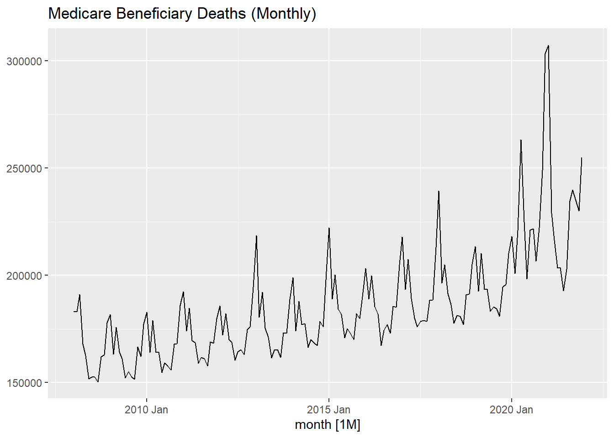
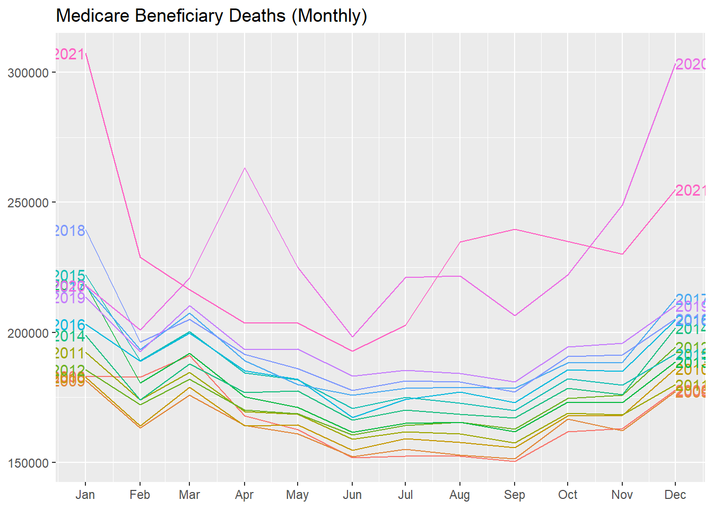

The appropriate forecasting methods depend largely on what data are available.
If there are no data available, or if the data available are not relevant to the forecasts, then qualitative forecasting methods must be used. These methods are not purely guesswork — there are well-developed structured approaches to obtaining good forecasts without using historical data. These methods are discussed in Chapter 6.
Quantitative forecasting can be applied when two conditions are satisfied:
numerical information about the past is available;
it is reasonable to assume that some aspects of the past patterns will continue into the future.
There is a wide range of quantitative forecasting methods, often developed within specific disciplines for specific purposes. Each method has its own properties, accuracies, and costs that must be considered when choosing a specific method.
Most quantitative prediction problems use either time series data (collected at regular intervals over time) or cross-sectional data (collected at a single point in time). In this book we are concerned with forecasting future data, and we concentrate on the time series domain.
Anything that is observed sequentially over time is a time series. In this book, we will only consider time series that are observed at regular intervals of time (e.g., hourly, daily, weekly, monthly, quarterly, annually). Irregularly spaced time series can also occur, but are beyond the scope of this book.
When forecasting time series data, the aim is to estimate how the sequence of observations will continue into the future.
tsibble Objects
A time series can be thought of as a list of numbers (the measurements), along with some information about what times those numbers were recorded (the index). This information can be stored as a tsibble object in R.
Suppose you have annual observations for the last few years:
# A tsibble: 168 x 3 [1M]
type deaths month
<chr> <dbl> <mth>
1 Medicare 183291 2008 Jan
2 Medicare 182939 2008 Feb
3 Medicare 191125 2008 Mar
4 Medicare 167865 2008 Apr
5 Medicare 162702 2008 May
6 Medicare 151849 2008 Jun
7 Medicare 152562 2008 Jul
8 Medicare 152562 2008 Aug
9 Medicare 150384 2008 Sep
10 Medicare 161946 2008 Oct
# ℹ 158 more rows
First, the date column is being converted from text to a monthly time object with yearmonth(). We then convert the data frame to a tsibble by identifying the index variable using as_tsibble(). Note the addition of [1M] on the first line indicating this is monthly data.
Other time class functions can be used depending on the frequency of the observations:
Some graphics and some models will use the seasonal period of the data. The seasonal period is the number of observations before the seasonal pattern repeats. In most cases, this will be automatically detected using the time index variable.
For quarterly, monthly and weekly data, there is only one seasonal period — the number of observations within each year. Actually, there are not
52 weeks in a year, but 365.25 / 7 = 52.18 on average, allowing for a leap year every fourth year. Approximating seasonal periods to integers can be useful as many seasonal terms in models only support integer seasonal periods.
Time Series Patterns
Many time series include trend, cycles and seasonality. When choosing a forecasting method, we will first need to identify the time series patterns in the data, and then choose a method that is able to capture the patterns properly.
Trend
A trend exists when there is a long-term increase or decrease in the data. It does not have to be linear. Sometimes we will refer to a trend as “changing direction”, when it might go from an increasing trend to a decreasing trend.
Seasonal
A seasonal pattern occurs when a time series is affected by seasonal factors such as the time of the year or the day of the week. Seasonality is always of a fixed and known period.
Cyclic
A cycle occurs when the data exhibit rises and falls that are not of a fixed frequency. These fluctuations are usually due to economic conditions, and are often related to the “business cycle”. The duration of these fluctuations is usually at least 2 years.
Many people confuse cyclic behaviour with seasonal behaviour, but they are really quite different. If the fluctuations are not of a fixed frequency then they are cyclic; if the frequency is unchanging and associated with some aspect of the calendar, then the pattern is seasonal. In general, the average length of cycles is longer than the length of a seasonal pattern, and the magnitudes of cycles tend to be more variable than the magnitudes of seasonal patterns.
Time Series Decomposition
Time series data can exhibit a variety of patterns, and it is often helpful to split a time series into several components, each representing an underlying pattern category.
There are three types of time series patterns: trend, seasonality and cycles. When we decompose a time series into components, we usually combine the trend and cycle into a single trend-cycle component (often just called the trend for simplicity). Thus we can think of a time series as comprising three components: a trend-cycle component, a seasonal component, and a remainder component (containing anything else in the time series).
When decomposing a time series, it is sometimes helpful to first transform or adjust the series in order to make the decomposition (and later analysis) as simple as possible.
Transformations and Adjustments
Adjusting the historical data can often lead to a simpler time series. Here, we deal with four kinds of adjustments: calendar adjustments, population adjustments, inflation adjustments and mathematical transformations. The purpose of these adjustments and transformations is to simplify the patterns in the historical data by removing known sources of variation, or by making the pattern more consistent across the whole data set. Simpler patterns are usually easier to model and lead to more accurate forecasts.
Calendar adjustments
Some of the variation seen in seasonal data may be due to simple calendar effects. In such cases, it is usually much easier to remove the variation before doing any further analysis.
For example, if you are studying the total monthly sales in a retail store, there will be variation between the months simply because of the different numbers of trading days in each month, in addition to the seasonal variation across the year. It is easy to remove this variation by computing average sales per trading day in each month, rather than total sales in the month. Then we effectively remove the calendar variation.
Population adjustments
Any data that are affected by population changes can be adjusted to give per-capita data. That is, consider the data per person (or per thousand people, or per million people) rather than the total. For example, if you are studying the number of hospital beds in a particular region over time, the results are much easier to interpret if you remove the effects of population changes by considering the number of beds per thousand people. Then you can see whether there have been real increases in the number of beds, or whether the increases are due entirely to population increases. It is possible for the total number of beds to increase, but the number of beds per thousand people to decrease. This occurs when the population is increasing faster than the number of hospital beds. For most data that are affected by population changes, it is best to use per-capita data rather than the totals.
Inflation adjustments
Data which are affected by the value of money are best adjusted before modelling. For example, the average cost of a new house will have increased over the last few decades due to inflation. A $200,000 house this year is not the same as a $200,000 house twenty years ago. For this reason, financial time series are usually adjusted so that all values are stated in dollar values from a particular year. For example, the house price data may be stated in year 2000 dollars.
To make these adjustments, a price index is used. If \(z_t\) denotes the price index and \(y_t\) denotes the original house price in year \(t\), then \(x_t = y_t/z_t ∗ z_2000\) gives the adjusted house price at year 2000 dollar values. Price indexes are often constructed by government agencies. For consumer goods, a common price index is the Consumer Price Index (or CPI).
This allows us to compare the growth or decline of industries relative to a common price value. For example, looking at aggregate annual “newspaper and book” retail turnover from aus_retail, and adjusting the data for inflation using CPI from global_economy allows us to understand the changes over time.
Mathematical transformations
If the data shows variation that increases or decreases with the level of the series, then a transformation can be useful. For example, a logarithmic transformation is often useful.
Time Series Components
Monthly Deaths
Time Plot
Code
deaths_month |> feasts::autoplot(deaths) +labs(title ="Medicare Beneficiary Deaths (Monthly)", y =NULL)

Seasonal Plot
Code
deaths_month |> feasts::gg_season(deaths, labels ="both") +labs(title ="Medicare Beneficiary Deaths (Monthly)", y =NULL, x =NULL)

Seasonal Subseries Plot
Code
deaths_month |> feasts::gg_subseries(deaths) +labs(title ="Medicare Beneficiary Deaths (Monthly)", y =NULL)
When data have a trend, the autocorrelations for small lags tend to be large and positive because observations nearby in time are also nearby in value. So the ACF of a trended time series tends to have positive values that slowly decrease as the lags increase.
When data are seasonal, the autocorrelations will be larger for the seasonal lags (at multiples of the seasonal period) than for other lags.
When data are both trended and seasonal, you see a combination of these effects. The data shows both trend and seasonality. The slow decrease in the ACF as the lags increase is due to the trend, while the “scalloped” shape is due to the seasonality.